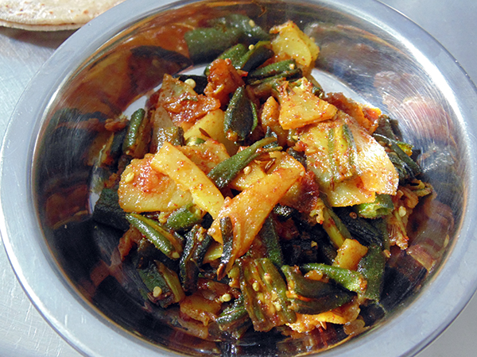

bhinda nu Shaak |
| Rateing |
| prep time:10 minit |
| cook time:20 minit |
| total time:30 minit |
|  |
Ingredients: |
250 gm lady’s finger
2 Potatoes
|
Instructions: |
| Wash lady’s finger, potatoes and cut in to long strip. Heat oil in a pan and add cumin seeds in it. When cumin seeds are spluttering, Add asafetida, turmeric powder, ginger chili paste, lady’s finger, potatoes and salt in it. Stir it properly. Cook till both become soft. Also mix cumin coriander powder and red chili powder. Serve with regular dish. |
video: |